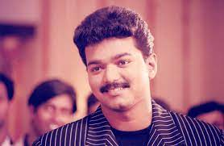
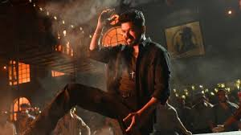

Thamilaga Vetri Kalagam
Born in Madras, Vijay made his debut as a child actor in the Tamil film Vetri in 1984. After a view roles as a child actor, he played the lead in the film Naalaiya Theerpu in 1992. Vijay continued doing lead roles for the next few years with mixed results, notable films amongst them included Poove Unakkaga, Kadhalukku Mariyadhai, Thulladha Manamum Thullum, Kushi and Friends. In 1998, he was awarded Kalaimaamani by the Government of Tamil Nadu.
Vijay was born on 22 June 1974 in Madras (now Chennai), Tamil Nadu.[1][2] His father, S. A. Chandrasekhar, is a film director and his mother, Shoba Chandrasekhar is a playback singer and vocalist.[3] His father is of Christian descent and his mother is a Hindu.[4][5] Vijay had a sister, Vidhya, who died when she was two years old.[6] Vijay did his schooling initially at Fathima school, Kodambakkam and later at Balalok school, Virugambakkam.[7][8] He pursued a bachelor degree in visual communication from Loyola College.[9]
